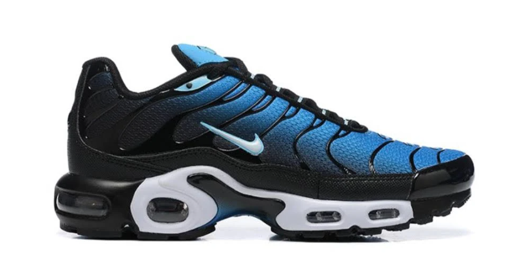
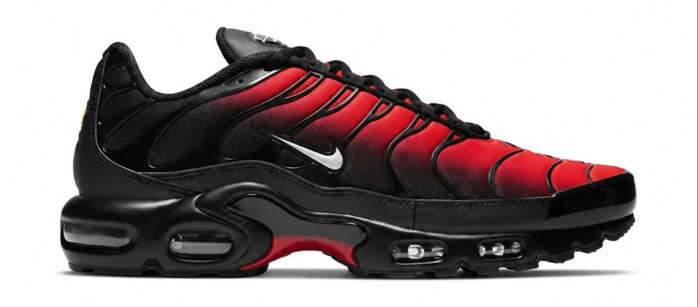

Sobre
O Air Max Plus foi lançado pela Nike em 1998. O apelido "TN" vem de Tuned Air, a tecnologia de amortecimento que deixa a sola mais firme e estável. Desde então, virou um dos tênis mais reconhecidos da cultura de rua.
Características
- Amortecimento Tuned Air
- Detalhes ondulados
- Degradê de cores na parte superior
- Plástico na lateral
Cores clássicas
-
Preto e azul

-
Preto e vermelho

- Branco e laranja